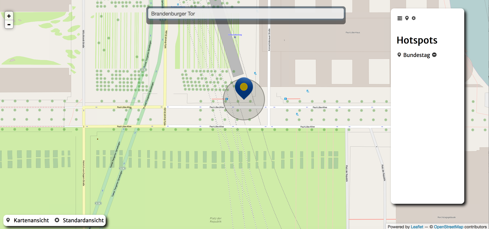
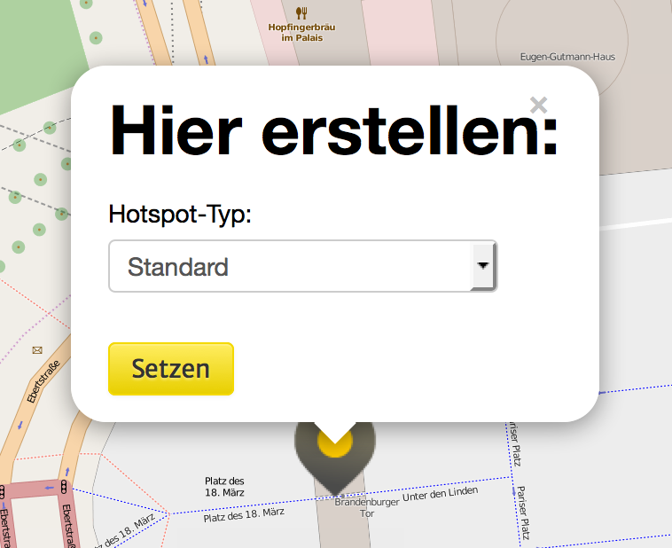
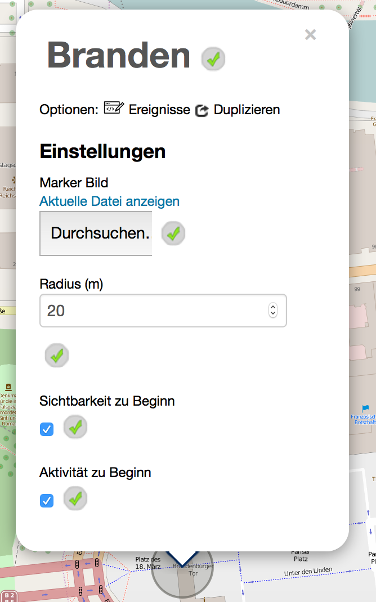

In der Kartenansicht kannst du Orte hinzufügen und editieren. Das sind Orte an die der Spieler gehen kann. Diese haben Trigger mit deren Hilfe du Aktionen ausführen kannst, nämlich "Beim Betreten", "Beim Verlassen" und "Beim Antippen". Sie sind die ganze Zeit im Hintergrund aktiv und reagieren darauf, ob der Spieler sich gerade in der Nähe von Diesen befindet.
Damit die Hotspots funktionieren musst du eine Kartenansicht-Seite erstellen und aufrufen. Du kannst diese aber auch direkt wieder verlassen, denn die GPS-Lokalisierung bleibt danach im Hintergrund aktiv.

Mit Hilfe des Texteingabefeldes am oberen Bildschirmrand kannst du einen Ort suchen. Gib den Namen des Ortes so genau wie möglich ein, da du aktuell nur das erste Ergebnis von Google für diesen Ort zur Auwahl hast. Wenn du deinen Ort eingegeben hast, drücke die "Enter"-Taste.

Nun wird dir ein Hotspot vorgeschlagen. Wenn du diesen Hotspot übernehmen möchtest, klicke auf "Setzen".
Danach sollte dein neuer Hotspot erstellt sein und sein Einstellungsfenster anzeigen.
Hier kannst du folgende Einstellungen vornehmen:
|  | Marker Bild: Das Bild für die Markierung auf der Karte. Dieses sollte ungefähr die Maße 60x60 haben. Radius: Der Radius in Metern, um den herum das Betreten des Hotspots für den Spieler getriggered wird. Sichtbarkeit zu Beginn: Der Wert den die Sichtbarkeit des Hotspots zu Beginn der Quest hat. Nur sichtbare Hotspots sind auf der Kartenansicht zu sehen. Aktivität zu Beginn: Der Wert den die Akitivität zu Beginn der Quest hat. Nur aktive Hotspots werde getriggered, wenn der Spieler sich in deren Radius befindet. |